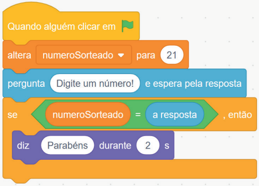
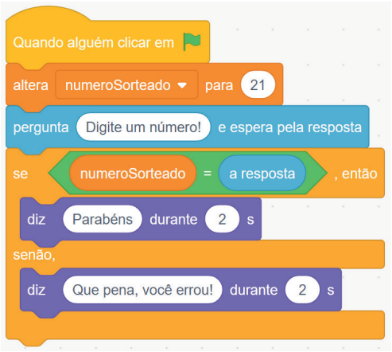
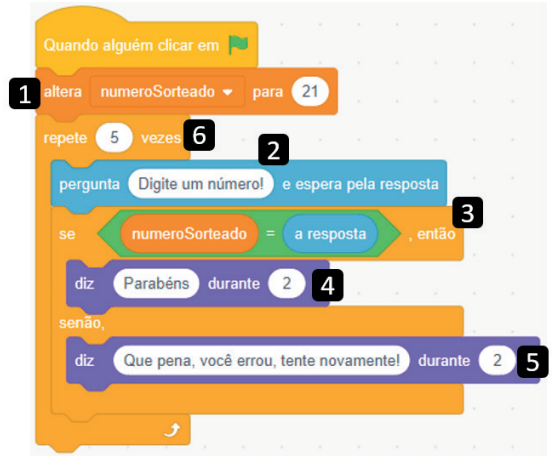

Algoritmos são compostos por uma sequência de instruções bem definidas com início e fim. Em situações simples, a sequência ocorre de forma linear — por exemplo, ao realizar uma operação aritmética sobre dois números.
No entanto, surgem problemas quando o algoritmo precisa validar condições específicas, como verificar se o valor informado é um número, se é negativo ou se o campo foi deixado em branco. Essas situações exigem o uso de controle de fluxo.
Outro exemplo é quando se deseja exibir os mil primeiros números ímpares positivos. Não é eficiente inserir mil instruções no código. A solução é usar um trecho que seja capaz de se repetir várias vezes, isto é, utilizar estruturas de repetição.
Ambas as situações exigem o uso de estruturas que modificam o fluxo natural do algoritmo — seja para ramificar decisões ou para repetir partes do código.
O algoritmo da figura 1 mostra um fluxo sequencial simples: entrada de três notas, cálculo da média e exibição do resultado. No entanto, ele não informa se o aluno está aprovado ou reprovado. Para isso, precisamos alterar o fluxo do algoritmo com uma condição.
Essa necessidade de desvio ou repetição do fluxo é um dos pilares da programação, permitindo que o código se adapte a diferentes situações.
Os operadores de comparação são usados para comparar valores e expressões, retornando como resultado true (verdadeiro) ou false (falso). Os principais operadores são:
> (maior)< (menor)>= (maior ou igual)<= (menor ou igual)== (igual)!= (diferente, também pode aparecer como <> em algumas linguagens)Já os operadores lógicos permitem combinar duas ou mais expressões. Os principais operadores lógicos são o E e o OU. Veja a tabela verdade a seguir:
| Expressão 1 | Expressão 2 | Operador E | Operador OU |
|---|---|---|---|
| true | true | true | true |
| true | false | false | true |
| false | true | false | true |
| false | false | false | false |
O operador E só retorna verdadeiro se todas as expressões forem verdadeiras. Já o operador OU retorna verdadeiro se pelo menos uma das expressões for verdadeira.
No Scratch, podemos usar estruturas condicionais para alterar o fluxo de execução. O bloco se (if) executa comandos apenas quando uma condição é verdadeira. Isso é útil, por exemplo, em jogos de adivinhação:
No exemplo da figura 2, a variável numeroSorteado recebe o valor 21. O usuário digita um número, e
se ele for igual a 21, uma mensagem de parabéns será exibida. Se for diferente, nada acontece.
Para tornar o código mais completo, usamos o bloco se/senão (if/else), que permite uma ação alternativa caso a condição não seja satisfeita.
Nesse caso, se o usuário acertar o número, o personagem dirá "Parabéns". Se errar, será exibida a mensagem "Que pena, você errou". Assim, o jogador sempre recebe um retorno visual.
Dica prática: para tornar o jogo mais dinâmico, substitua o número fixo 21 por um valor aleatório usando o bloco um valor ao acaso entre, encontrado na categoria operadores.
Com o jogo funcionando, percebemos que ele ainda não é justo, pois o jogador tem apenas uma tentativa. Para resolver isso, usamos o bloco repete, que executa o mesmo conjunto de instruções múltiplas vezes.
Na figura 4, o código da adivinhação foi colocado dentro do bloco de repetição, configurado para executar 5 vezes. Assim, o jogador tem 5 chances para acertar o número.
Detalhes importantes:
numeroSorteado recebe o número 21, ou seja, é o valor que o
jogador deve adivinhar.numeroSorteado, então será executada a instrução em 4. Senão, ou seja, se for
diferente, então será executada a instrução em 5.Agora, sim, o código está mais justo, afinal, ele permite que o jogador realize mais de uma tentativa.
Veja o seguinte vídeo e acompanhe no seu computador para melhor entendimento: link
Neste capítulo, aprendemos como modificar o fluxo de execução de um algoritmo, seja através de condições (estruturas se e se/senão), seja através de repetições (blocos repete).
A lógica de fluxo é fundamental para criar programas interativos, eficientes e dinâmicos. Ao dominar esses conceitos, é possível desenvolver soluções mais inteligentes e justas, como o jogo da adivinhação com múltiplas tentativas.
{% include nav-aula.html materia="algoritmoseprogramacao1" aula="5" %} {% include footer.html %}